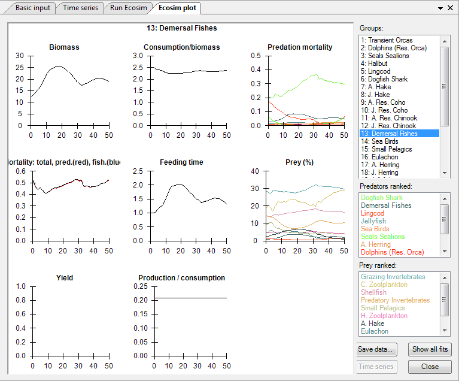
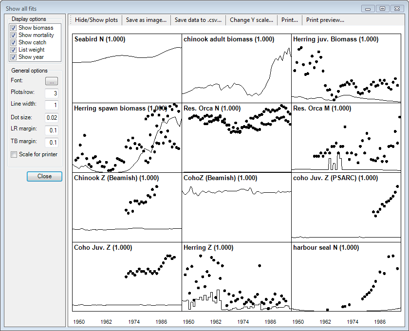

If you have loaded and applied time series of historical data using the Time series form, dots will appear on the Biomass plot showing the observed biomass time series, while dots on the Yield plot will show observed catches (t · km-2 · year-1). Ecosim’s predicted biomasses and catches are shown as lines.
Displays values of currently-loaded time series for the selected group.
Saves eight csv-files, one for each of the displayed plots, storing the data for all groups.
Use Display options and Show/hide plots to select which plots to display (by data type and by group, respectively).
Use General options (left-hand side of the form) to set font, number of plots per row, dot size, line size and margins.
Use Save as image... to save the plots as a bitmap (.bmp) file.
Export the data to three csv files showing results for biomasses, catches and mortality using Save data to .csv...
Change Y scale allows you to set the maximum Y-value for each individual plot.
Print the plots directly using Print… and Print preview…
Closes the Ecosim plot form.

Figure 9.3 The Ecosim plot form showing predictions for the Demersal fishes group.

Figure 9.4 The Show all fits form showing initial fits for select groups (prior to any fitting). See Time series fitting and Hints for fitting models to time series reference data for more on fitting models to data.